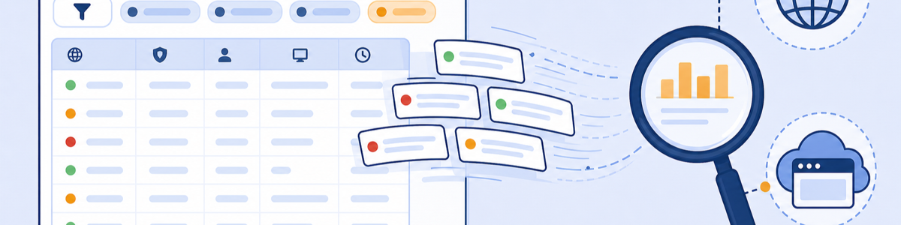

Lab 6: Inspecting Cloud Browser Isolation Logs
Scenario: When a URL Filtering or Cloud App Control policy isolates a session, ZIA logs two location categories: Road Warrior (the user's request to ZIA) and Cloud Browser (the isolated container's subsequent requests). Understanding this dual-log model is essential for accurate troubleshooting and billing analysis.
Every isolated session produces at least two log entries: one from the user's device (Road Warrior) showing the isolation trigger, and one or more from the Cloud Browser container (Cloud Browser location) showing the actual page traffic. Filtering only on Road Warrior hides the full picture.
- An isolated bbc.com session produces entries with Location: Road Warrior AND Location: Cloud Browser. Why are there two location types, and what does each represent?
- In the Road Warrior log entry for bbc.com, the Policy Action shows "Allowed for Isolation." Why is the action "Allowed" and not "Isolated" — what does this wording tell you about how Zscaler processes the request?
- A user reports they visited bbc.com but the logs show only Road Warrior entries and no Cloud Browser entries. What does this indicate?
Task 6.1: Review Isolation Log Details
1 Filter Logs for Road Warrior Isolation Events
- In the ZIA Admin Portal, go to Analytics › Web Insights.
- Click the Logs tab.
- Under Timeframe, select Current Day.
- Under Select Filters, click Add Filter and type loc to find Location.
- Select Road Warrior and click Done.
- Click Add Filter again, type URL Search, change Domain to Host, select Contains, and type
bbc.com. - Click Apply Filters and review the log entries. Note the Policy Action: Allowed for Isolation column.
Note: Log entries may take a few minutes to appear after your Lab 4 test. If no entries show for bbc.com, re-run the Lab 4 test and wait 2-3 minutes.
2 Add Cloud Browser to the Location Filter
- Click the Location filter and add Cloud Browser to the selection (keeping Road Warrior selected).
- Click Apply Filters.
- Review the expanded log. Cloud Browser entries show the traffic generated by the isolated container itself — all the page resources bbc.com loaded.
Note: The combined Road Warrior + Cloud Browser view shows the complete isolation flow: the trigger request (Road Warrior) and all subsequent container activity (Cloud Browser). Cloud Browser entries show Action: Allowed because they are normal outbound requests from the container.
